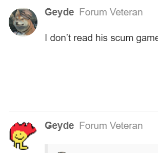

tbh main reason I don’t feel iffy on your slot anymore is a post from marshal
Wazza self voted himself, PKR is the one that did the plan.
And that’s why I think scum, if they voted Alice, were not part of the first few votes
Albeit that clears me, but it makes sense given the picture that scum wouldn’t enjoy having to help lift the push on alice to a point at which it can seriously lynch them
I think they came in with the later-ish portion so about halfway through
that’s why I don’t like evo
their push sealed the deal but the lynch was already pretty much there
I want to say there had to be 2 players off wagon because a lot of the push on alice didn’t feel coordinated or at least the reasons for some of those votes don’t jive too hard

stop changing pfp -_-
actually
For real, I do this as both alignments I think
this
this is what all of you appear to me 
You had twi / evo pushing them with both having individual pr claims
you had magnus making their own decision (albeit a weird one given that they hard defended alice earlier)
And uni existed, I guess
That’s the worst vote on the wagon
And everyone else I already kinda like
haha
well I really kinda was relying on Marshal, he was the only person d1 that was in my randomizer and this game, and when he was ‘confirmed’ vet I was glad that I could because we both topposted and I thought we could control thread to a townie direction
but darn he flipped executioner, and now the court’s got a lot less direction because the two top alive top posters are an openwolf and a noob
you know if we had two deaths last night, like I predicted in my rolecard(with one of them being the mayor) we’d be at MYLO?
so this is where I was at for n2 and part of what ive been thinking through the day
no

I can’t tell who’s who
you missed the crocodile one
1 Like
that one doesn’t exist
it’s too powerful
they were just one after another so 
back to the actual topic
Given that we are in such a precarious situation, I think it’s more smarter to make bold calls that make sense
I can see a world where the scum aren’t really united by not talking in scumchat all that much, then proceeding to mass dump onto Alice EoD1 while not really pushing each other
Pog/EVO/Uni/Magnus feels like an alright solve to me
cloned, who’s in your PoE?
I feel like a ceral box
I don’t see gorta because of them being in the bathroom while everyone else boarded the plane
you know I don’t know its smarter but it’d be pog if you were right and it sounds cool
okay
this is bastard game
/vote Geyde
i don’t know what that means but I fear AtE’s
/unvote
oh no my dog stole my keyboard then proceeded to type the entire last message then hit send
ive heard the term be used i just don’t know what it means
-cat